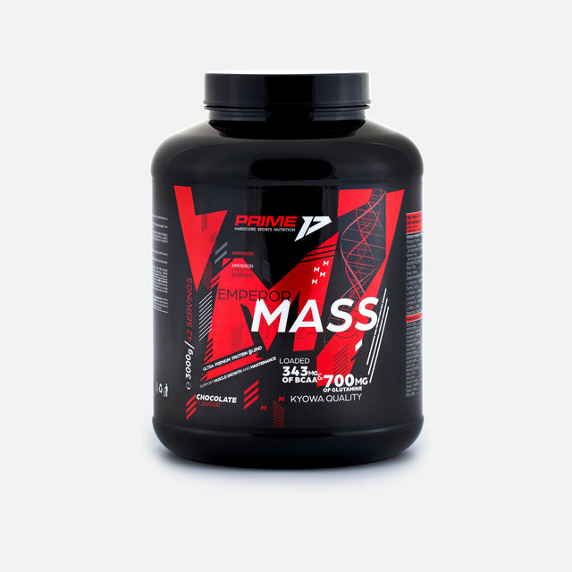
Emperor Mass
Gainer · 3 kg · Chocolate, Strawberry
Gainer with 40% protein: 27.8 g protein and 29.0 g carbohydrates per 70 g serving, plus 1,750 mg creatine monohydrate, L-glutamine, BCAA 4:1:1 and DigeZyme®.

International distribution portfolio
Prime Supplements is a Romanian sports nutrition brand: protein, creatine, cream of rice and a complete range made in the European Union.
About the brand
Prime Supplements was founded in 2022 in Sibiu County, Romania. Our mission is to educate and inspire athletes and to improve their performance.
The supplements are designed to support athletes up to the highest level of performance. The ranges serve both competitive athletes and people who train and want healthy, tailored nutrition.
We analyse demand, athletes' needs and raw materials, and we keep raising quality. That is how we work towards our mission: to set a new standard in the supplement market, to support athletes on their way to peak performance and to offer products tailored to their nutritional needs.

Hardcore Sports Nutrition is our motto and the mindset behind the company. The formulas, with their micro- and macronutrients, were designed after many years of study and experience in competitive bodybuilding. For us it is more than a motto that pushed us to look for the right balance in our products: it is a mindset that drives anyone to go beyond their own limits through dedication to their goal, supported by the balance between nutrition and training.
The founder
Marius Chera founded Prime Supplements in 2022. He is one of the best-known bodybuilding coaches in Romania and the first Romanian coach to have prepared athletes who earned the PRO card within the NPC organisation. His experience in bodybuilding is the basis on which the products were optimised: the range he recommends to bodybuilders throughout their preparation is the Prime Supplements range.
Why Prime Supplements
We work with leading suppliers in the supplement industry. Beyond processing technology and raw materials, we take pride in the recipes themselves.
Best sellers
Protein, cream of rice and creatine are the core of the brand. The next pages present each line in detail; the rest of the range follows as a compact catalogue.
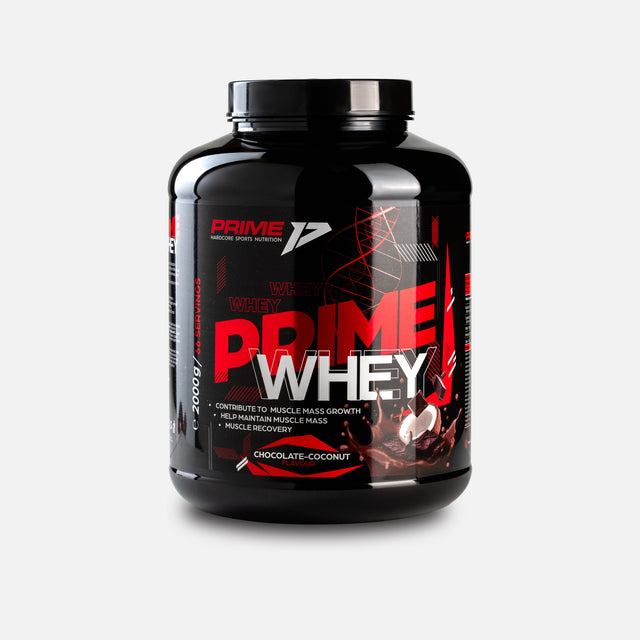
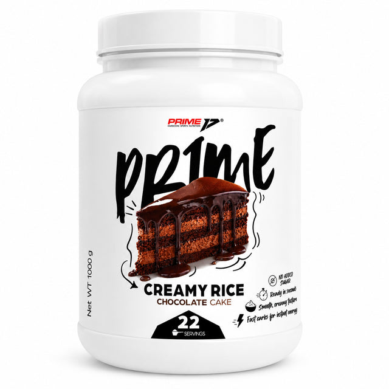
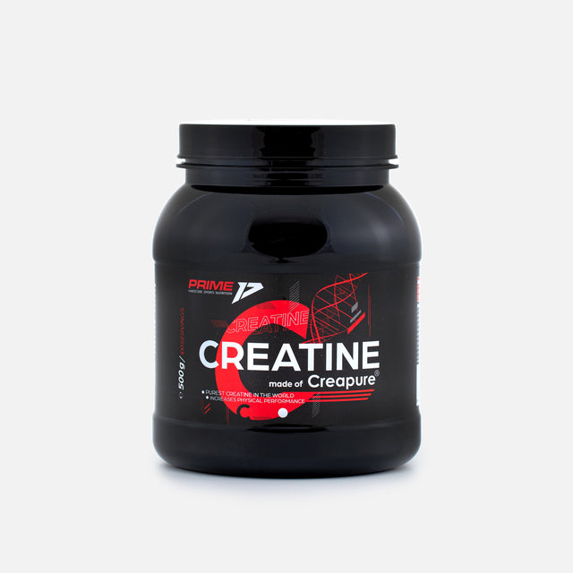
Ranking by units sold on primesupplements.ro in the 12 months to 10 November 2026 (Shopify Analytics). Six of the seven Creamy Rice flavours are in the top 20.

Best seller · Protein
Whey protein concentrate · our best-selling product
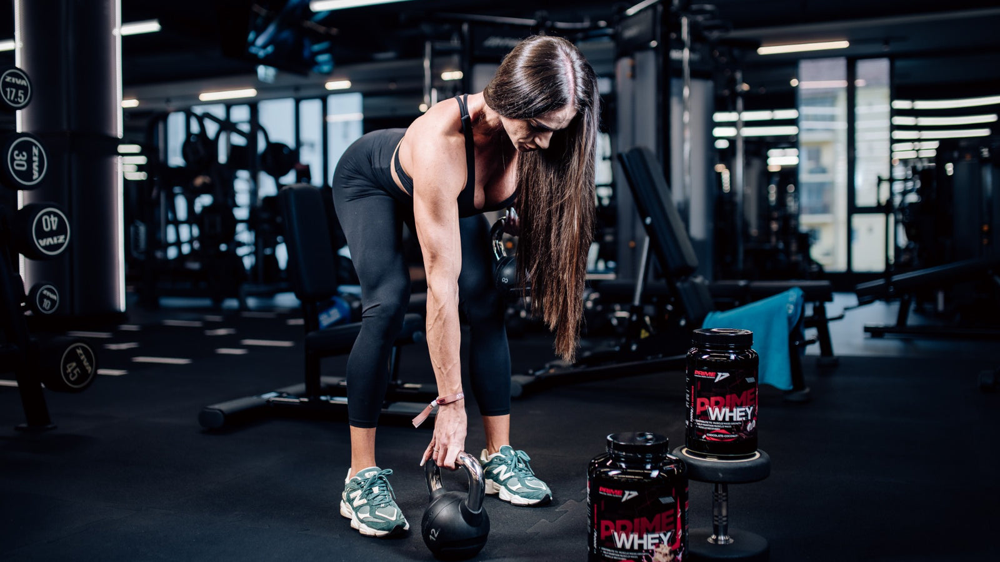
Prime Whey is a whey protein concentrate powder with added glycine and L-lysine, with flavours and sweeteners. One 30 g scoop provides around 24 g of protein.
Mix one scoop (30 g) with 150–200 ml of water or milk in a shaker. The label recommends 1–4 servings a day, depending on protein needs.
| per 30 g serving | per 100 g | |
|---|---|---|
| Energy | 504.0 kJ / 120.6 kcal | 1680.0 kJ / 401.9 kcal |
| Fat | 2.0 g | 6.6 g |
| of which saturates | 1.1 g | 3.5 g |
| Carbohydrate | 1.3 g | 4.4 g |
| of which sugars | 1.3 g | 4.4 g |
| Fibre | 0 g | 0 g |
| Protein | 24.4 g | 81.3 g |
| Salt | 0.12 g | 0.39 g |
Blueberry Vanilla, 1 kg tub. Other flavours have their own table, with similar values (around 23–24 g of protein per serving).
Best seller · Protein
The large tub for people who take protein almost daily and have found their flavour. Our number one product by units sold.
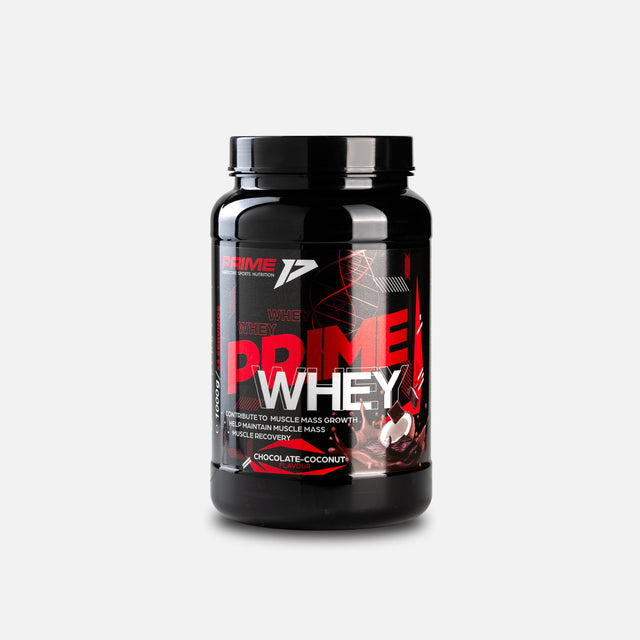
Suited to a first order, to trying a new flavour, or to people who take protein only on training days. About one month at one serving a day.
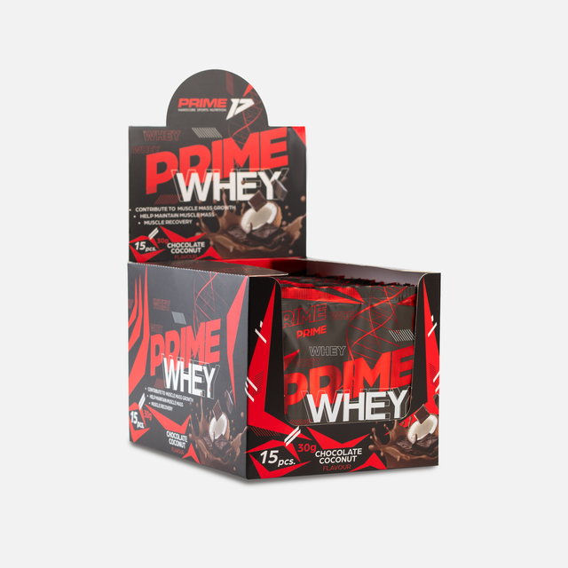
Prime Whey in a single-serve sachet for the gym, the office or travel: no tub and no scoop to carry.
Food supplement. Not recommended for children or for women during pregnancy or breastfeeding. Do not exceed the recommended daily dose.
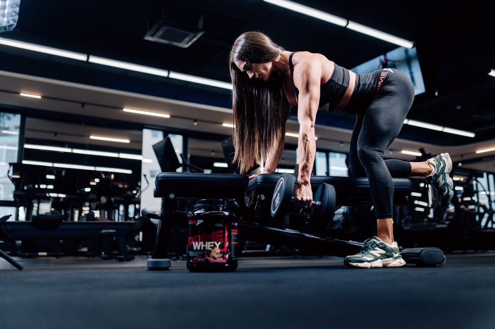
Best seller · Protein
Microfiltered whey protein isolate · 2 kg · 74 servings
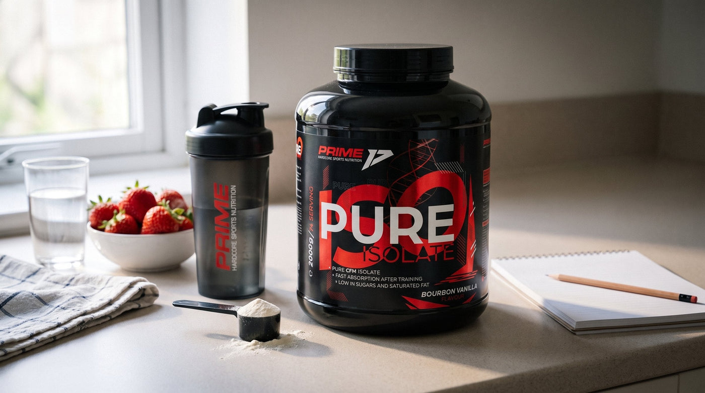
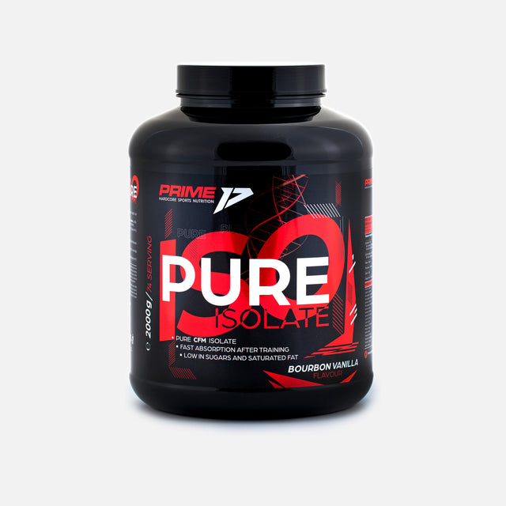
Pure Isolate is the only isolate in the Prime range: microfiltered whey protein isolate with the DigeZyme® enzyme complex. A 27 g serving provides 23.5 g of protein and 97.3 kcal.
Mix one 27 g serving with water or milk, after training or during the day.
| per 27 g serving | per 100 g | |
|---|---|---|
| Energy | 406.8 kJ / 97.3 kcal | 1506.5 kJ / 360.4 kcal |
| Protein | 23.5 g | 87.0 g |
| Carbohydrate | 0.26 g | 0.96 g |
| of which sugars | 0.26 g | 0.96 g |
| Fat | 0.26 g | 0.96 g |
| Fibre | 0 g | 0 g |
| Sodium | 0.04 g | 0.14 g |
| DigeZyme® | 40.5 mg | 150 mg |
Best seller · Cream of Rice
Instant cream of rice · 1 kg · 22 servings · seven flavours
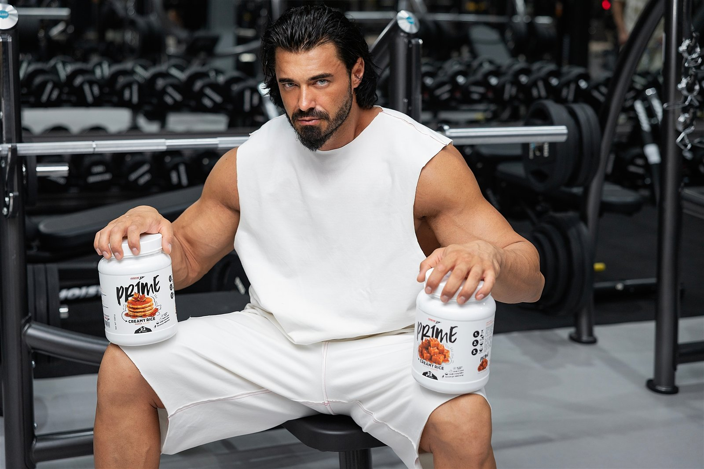
Creamy Rice is an instant cream of rice: a powder based on pregelatinised rice flour. Because the starch is pregelatinised, it binds directly with cold liquid, with no cooking.
Put one 45 g serving (1 scoop) in a bowl or shaker, add 150–200 ml of cold water or milk and stir until creamy. With 150 ml it is thicker, like a pudding; with 200 ml it is more fluid.
People who want a fast carbohydrate meal: breakfast, a snack or a dessert without cooking. Athletes who mix it with their protein shake. The unflavoured version is a neutral base for sweet or savoury recipes.
Best seller · Cream of Rice
Six of the seven flavours are among our 20 best-selling products.
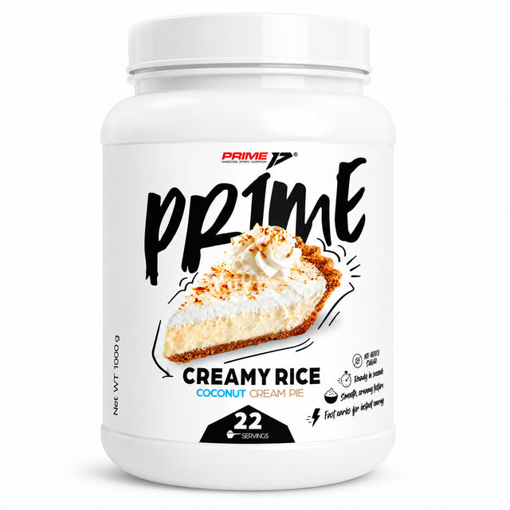
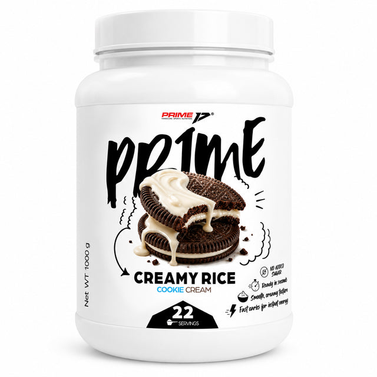
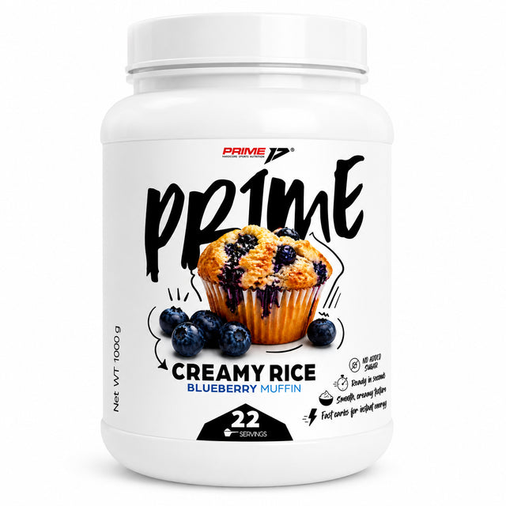
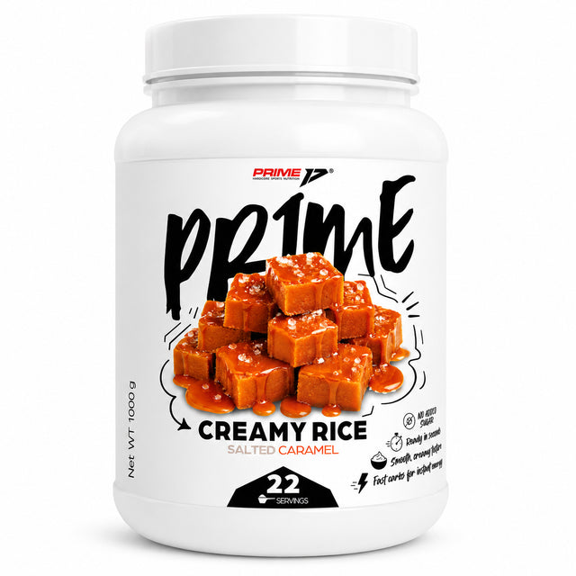
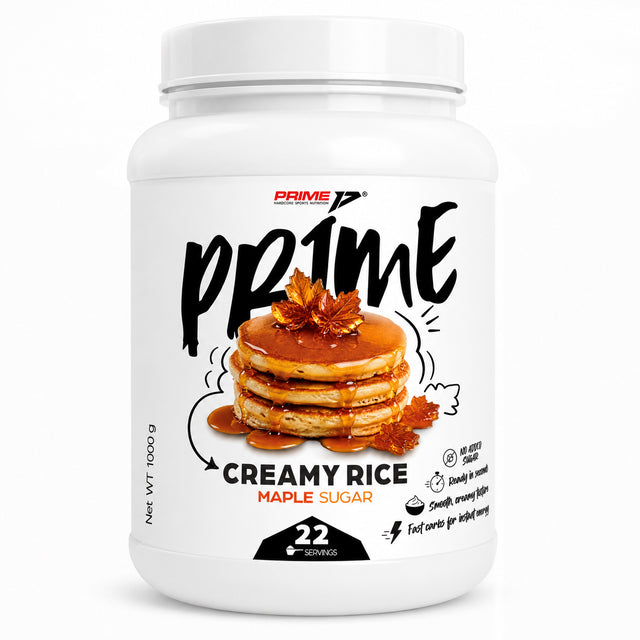
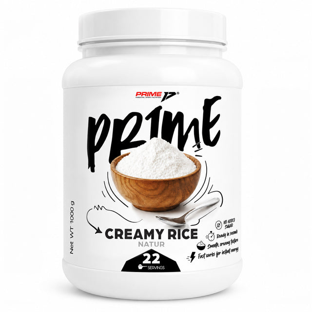
| Flavour | Energy | Fat | of which saturates | Carbohydrate | of which sugars | Fibre | Protein | Salt |
|---|---|---|---|---|---|---|---|---|
| Chocolate Cake | 155.8 kcal | 0.65 g | 0.25 g | 32.6 g | 0.3 g | 1.4 g | 4.2 g | 0.15 g |
| Coconut Cream Pie | 166.2 kcal | 1.8 g | 1.4 g | 33.3 g | 0.3 g | 0.7 g | 3.7 g | 0.15 g |
| Cookie Cream | 155.7 kcal | 0.4 g | 0.13 g | 33.8 g | 0.3 g | 0.9 g | 3.4 g | 0.12 g |
| Blueberry Muffin | 157.2 kcal | 0.27 g | 0.07 g | 34.7 g | 1.0 g | 0.8 g | 3.6 g | 0.15 g |
| Salted Caramel | 155.2 kcal | 0.5 g | 0.2 g | 33.4 g | 0.3 g | 1.0 g | 3.9 g | 0.4 g |
| Maple Sugar | 155.4 kcal | 0.3 g | 0.07 g | 34.3 g | 0.3 g | 0.7 g | 3.6 g | 0.14 g |
| Natur (unflavoured) | 158.8 kcal | 0.3 g | 0.07 g | 35.1 g | 0.3 g | 0.7 g | 3.6 g | 0.0 g |
Values from the nutrition declaration of each product. Per 100 g: 345–369 kcal depending on flavour.
Flavoured: pregelatinised rice flour, flavours, salt, sweeteners (sucralose, acesulfame-K); low-fat cocoa in Chocolate Cake, Cookie Cream and Salted Caramel; dried blueberry pieces (3%) in Blueberry Muffin; coconut milk powder and chocolate pieces (3%) in Coconut Cream Pie.
Natur: pregelatinised rice flour (100%). No flavours, no sweeteners.
Prime Whey in the matching flavour (Salted Caramel exists in both ranges), Prime Health peanut and almond butter, fresh fruit.
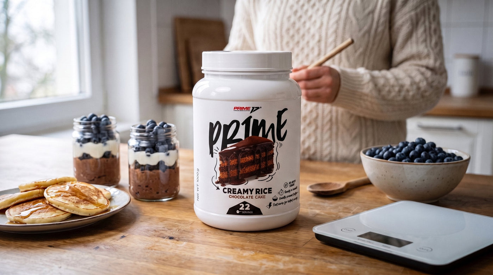
Best seller · Creatine
Creatine monohydrate · 300 g and 500 g · unflavoured
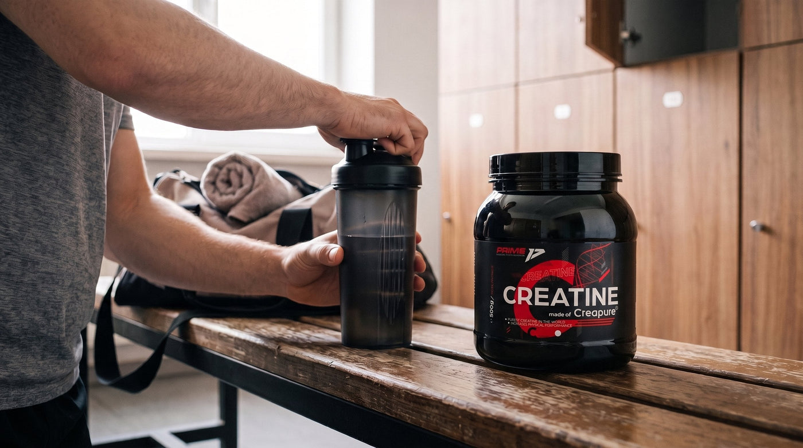
A food supplement powder with a single ingredient: micronised creatine monohydrate (Creapure®). “Made of Creapure®” is printed on the front of the tub, and Prime Supplements is listed on creapure.com as a Creapure® partner brand for Romania.
Adults who do high intensity training and want a creatine with a named, verifiable raw material. Not recommended for people under 18 or for women during pregnancy and breastfeeding.
| per 5 g serving | |
|---|---|
| Creatine monohydrate (Creapure®) | 5 g |
| Recommended daily dose | 3–5 g of creatine |
| Servings | EAN | |
|---|---|---|
| 300 g tub | 60 × 5 g | 6421766064404 |
| 500 g tub | 100 × 5 g | 6421766015109 |
3–5 g of creatine a day, mixed in water or in a protein shake. Drink enough fluids during the day and do not exceed the recommended daily dose.
Best seller · Creatine
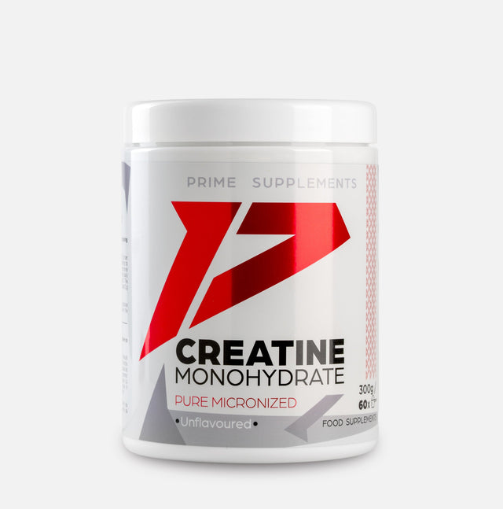
300 g · 60 servings · unflavoured · scoop included
A powder that contains 100% creatine monohydrate: one ingredient, no flavours, sweeteners or colours. “Micronized” and “Unflavoured” are printed on the front of the tub.
| per 5 g serving | |
|---|---|
| Creatine monohydrate | 5,000 mg |
Mix 5 g (½ scoop) in 300–500 ml of water in a shaker, or add it to a protein shake. The label describes a loading phase based on body weight and a maintenance period.
Adults who do high intensity training and want the simplest form of creatine. Not recommended for children or for women during pregnancy or breastfeeding.
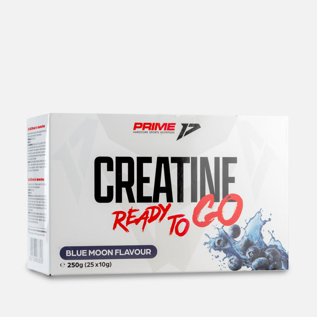
10 g effervescent sachet · single or box of 25 (250 g)
Creatine in single-serve sachets for people who train away from home and do not want to measure powder. The effervescent formula dissolves in water.
| per 10 g sachet | |
|---|---|
| Creatine monohydrate | 5,000 mg |
| Vitamin C | 200 mg (250% NRV) |
One sachet a day, dissolved in 200–300 ml of water, about 30–60 minutes before training. After 8 weeks of regular use, take a 2–3 week break, as stated on the packaging.
Customers who want to try creatine without buying a tub; gym and retail counters, where it is sold individually.
Creatine increases physical performance in successive bursts of short-term, high intensity exercise. The beneficial effect is obtained with a daily intake of 3 g of creatine. Vitamin C contributes to the normal function of the immune system.
How the range works together
Eight of these combinations have been sold as ready-made bundles on primesupplements.ro; the ninth, Protein breakfast, is a pairing suggested on our product pages. For a distributor they are a simple way to grow basket size: every stack starts from Prime Whey, Creamy Rice or creatine.
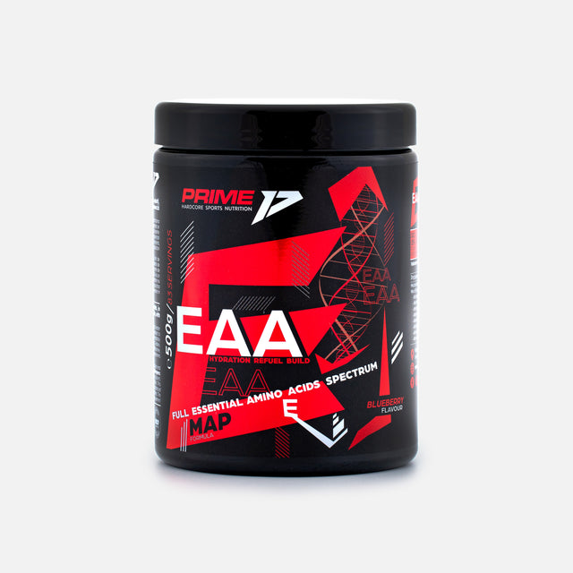
Prime Whey 1 kg + EAA
The entry stack: daily protein and an essential amino acid drink for training.
Prime Whey 2 kg + Creapure® 300 g + EAA
Protein, creatine and essential amino acids: the three staples in one order.
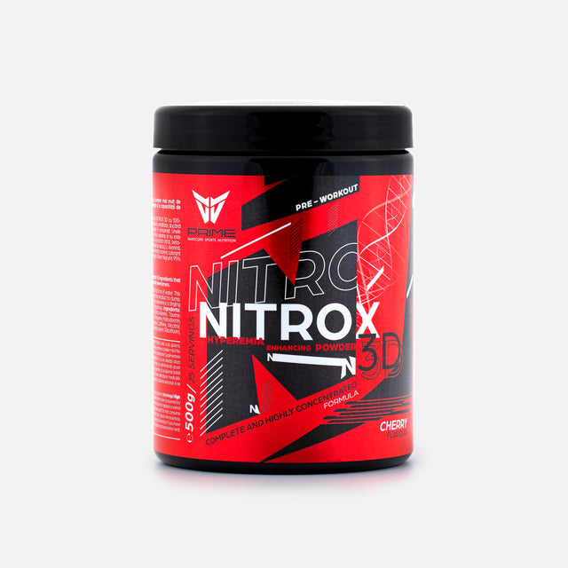
Prime Whey 2 kg + Nitrox 3D
Protein for the day and a full pre-workout for the session.
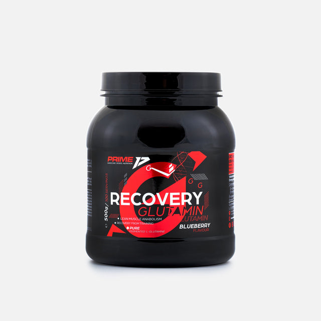
Prime Whey 2 kg + Glutamin Kyowa®
Whey protein paired with L-glutamine Kyowa®.
Nitrox 3D + Creapure® 500 g
Pre-workout plus daily Creapure® creatine.
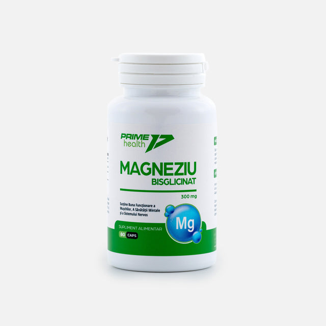
+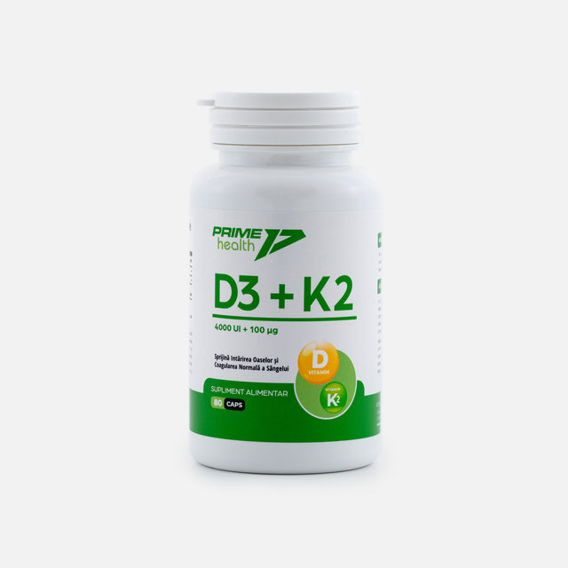
Creapure® 500 g + Magnesium Bisglycinate + Vitamin D3 + K2
Creatine with magnesium bisglycinate and vitamin D3 + K2.
Prime Whey 1 kg + Magnesium Bisglycinate + Vitamin D3 + K2
Protein with magnesium and vitamin D3 + K2.
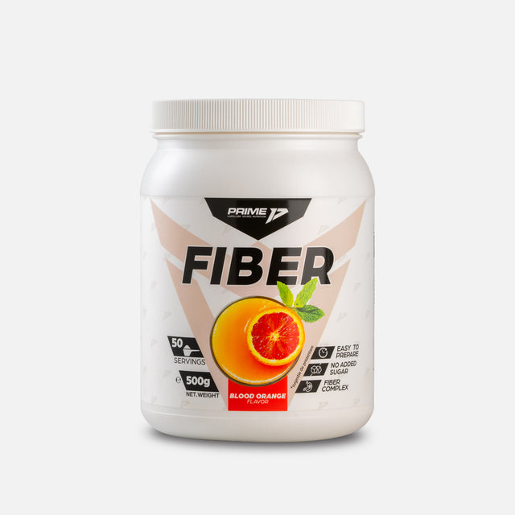
Prime Whey 1 kg + Fiber
Protein and a fibre drink.
Prime Whey + Creamy Rice
Creamy Rice can be eaten on its own or added to protein shakes, as stated on its label; matching flavours (e.g. Salted Caramel) exist in both ranges.
Other bundles we have sold include Full Stack, Performance, Pump, Intra, Health, Cut, Focus and Energy.
Full catalogue
All products are Prime Supplements branded. Quantities per serving are those declared on the product pages and labels.

Gainer · 3 kg · Chocolate, Strawberry
Gainer with 40% protein: 27.8 g protein and 29.0 g carbohydrates per 70 g serving, plus 1,750 mg creatine monohydrate, L-glutamine, BCAA 4:1:1 and DigeZyme®.
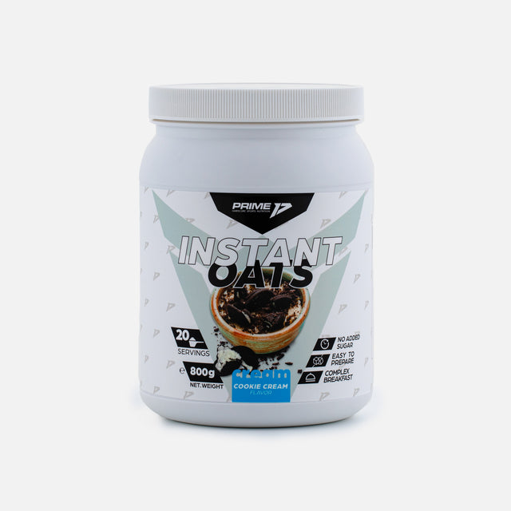
Oat cream · 800 g · Chocolate Cream, Cookie Cream
Instant cream made from oat flour. Add hot water or milk and let it hydrate for 1–3 minutes.
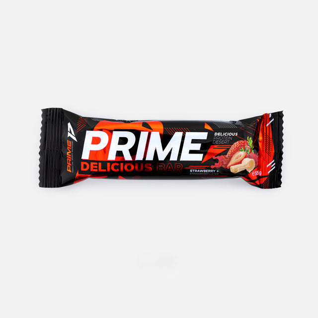
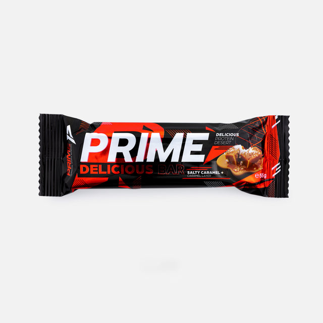
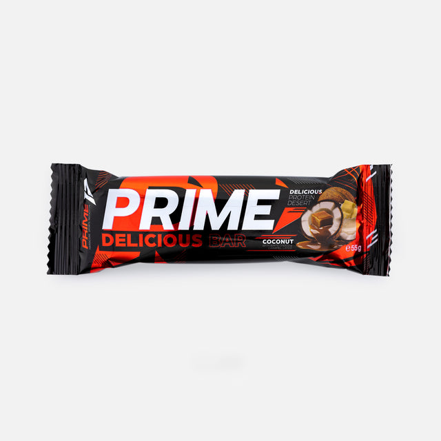
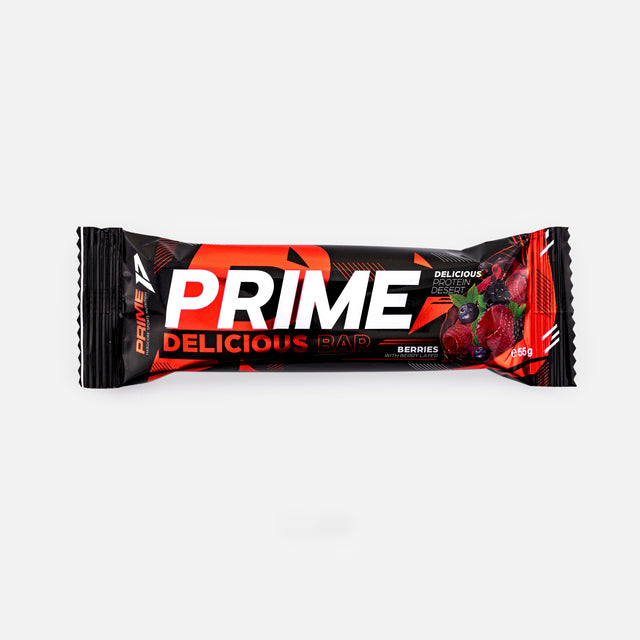
Protein bar · 55 g · single bar or box of 12
20 g of protein in a 55 g bar, from whey protein concentrate, collagen peptides, soy protein isolate and whole milk powder. Four flavours: Strawberry, Salted Caramel, Coconut & Caramel, Chocolate & Forest Fruits. The strawberry bar is our third best-selling product by units.
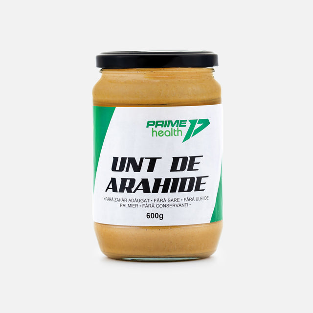
Prime Health · 600 g glass jar
100% roasted peanuts. No added sugar, salt, palm oil or preservatives. 26 g protein and 7 g fibre per 100 g.
Stacks with: Creamy Rice
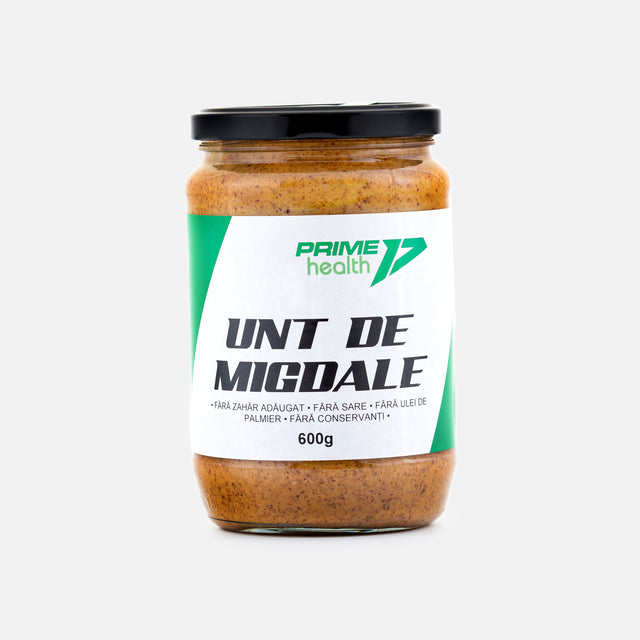
Prime Health · 600 g glass jar
100% roasted almonds, nothing added. 21.2 g protein per 100 g.
Stacks with: Creamy Rice
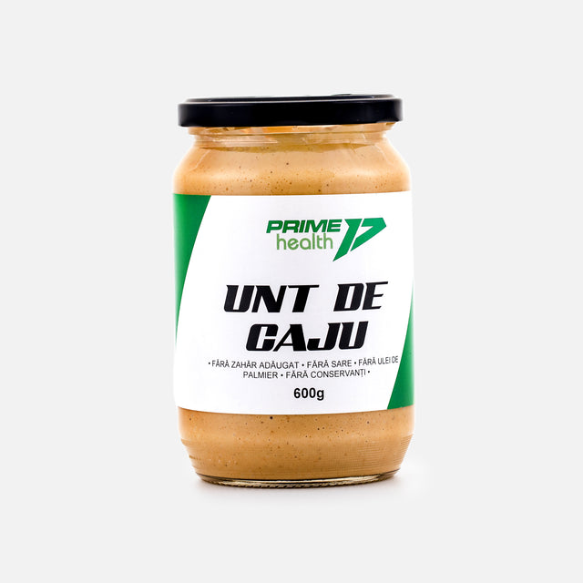
Prime Health · 600 g glass jar
Cashew paste in a glass jar. 18 g protein per 100 g, 0 g salt.
Fibre drink · 500 g · 50 servings · Blood Orange
Instant drink with 7.4 g fibre per 10 g serving, from inulin, acacia fibre, bamboo fibre, oat flour and glucomannan.
Stacks with: Prime Whey
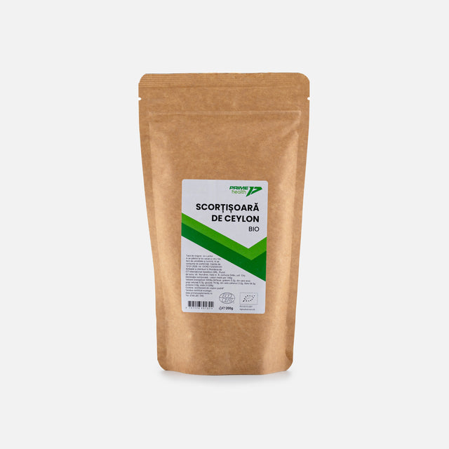
Prime Health · 200 g
Ground Ceylon cinnamon from organic farming, single ingredient, in a kraft paper pouch.
Full catalogue
500 g · 83 servings · 4 flavours
Eight essential amino acids, 5,350 mg per 6 g serving, including 1,070 mg L-leucine. 0 g carbohydrates.
Stacks with: Prime Whey
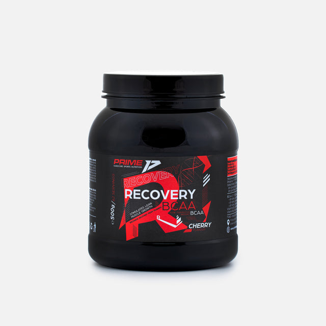
500 g · 62 servings · Cherry, Pear
7,100 mg BCAA per 8 g serving in a 4:1:1 ratio, with vitamin B6 (106% NRV).
500 g · unflavoured or 4 flavours
4,000 mg L-glutamine Kyowa® per serving. The unflavoured version has a single ingredient and 125 servings.
Stacks with: Prime Whey
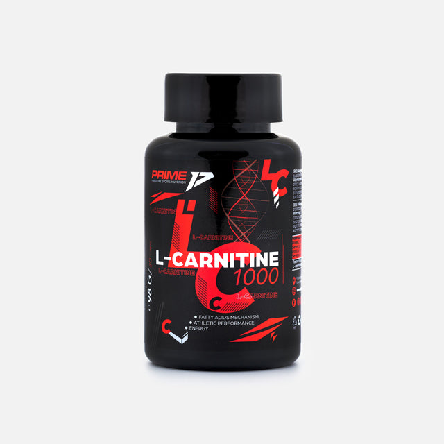
80 capsules
1,000 mg L-carnitine tartrate per capsule, the only active ingredient.
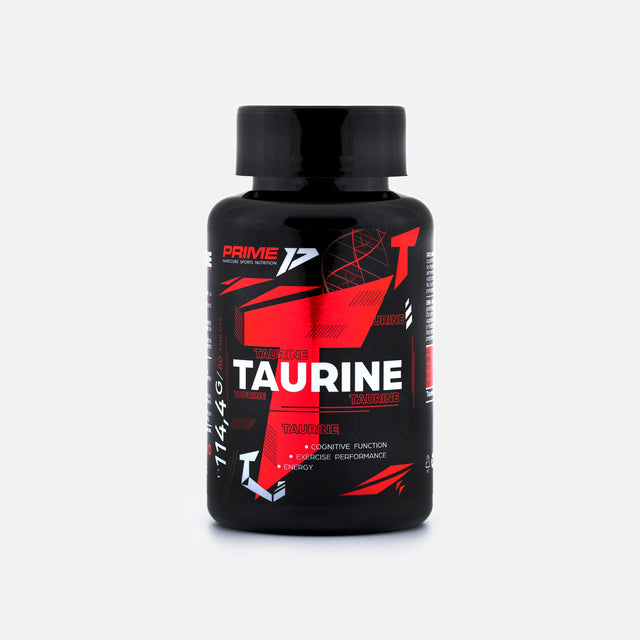
80 capsules
1,000 mg taurine per capsule.
500 g · 25 servings · 4 flavours
Per 20 g serving: 6,000 mg L-citrulline, 4,420 mg arginine AKG, 2,000 mg tri-creatine citrate, 2,000 mg beta-alanine, 200 mg caffeine.
Stacks with: Creatine Creapure®
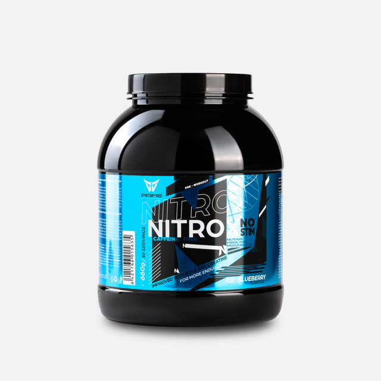
Stimulant-free · 660 g · 30 servings
No caffeine and no synephrine in the ingredient list. Per 22 g serving: 4,000 mg BCAA 2:1:1, 3,753 mg L-citrulline, 2,200 mg creatine monohydrate.
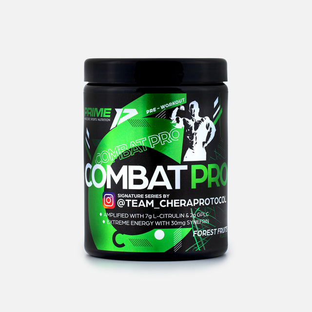
500 g · 22 servings · 4 flavours
Per 22 g serving: 7,000 mg L-citrulline, 4,000 mg beta-alanine, 4,000 mg L-arginine, 300 mg caffeine and 30 mg synephrine.
Stacks with: Creatine Creapure®
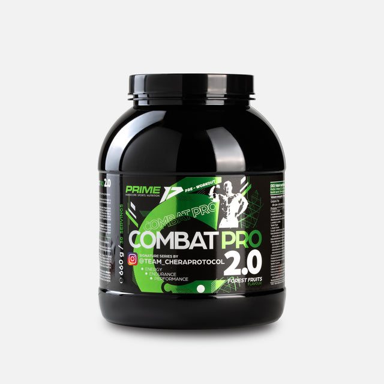
660 g · 30 servings · 2 flavours
No caffeine in the ingredient list; contains 45 mg synephrine. Per 22 g serving: 5,600 mg L-citrulline, 3,900 mg beta-alanine.
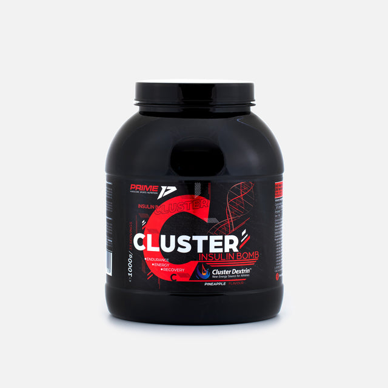
Intra-workout · 1 kg · 33 servings
Cluster Dextrin® drink: 19.9 g carbohydrates per 30 g serving, plus 2,400 mg each of EAA, creatine monohydrate and L-citrulline.
Stacks with: EAA
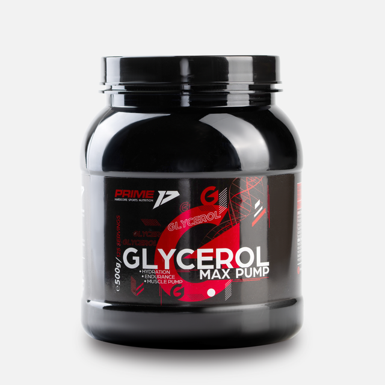
500 g · 125 servings · unflavoured
Single ingredient: glycerol monostearate, 4,000 mg per 4 g serving.
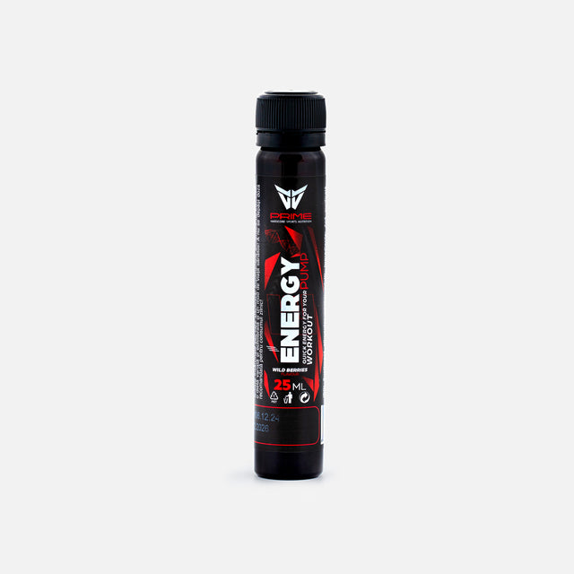
25 ml vial · single or box of 20
Ready to drink. Per vial: 4,000 mg citrulline malate, 4,000 mg arginine AKG 2:1, 3,000 mg beta-alanine, 100 mg caffeine.
Full catalogue
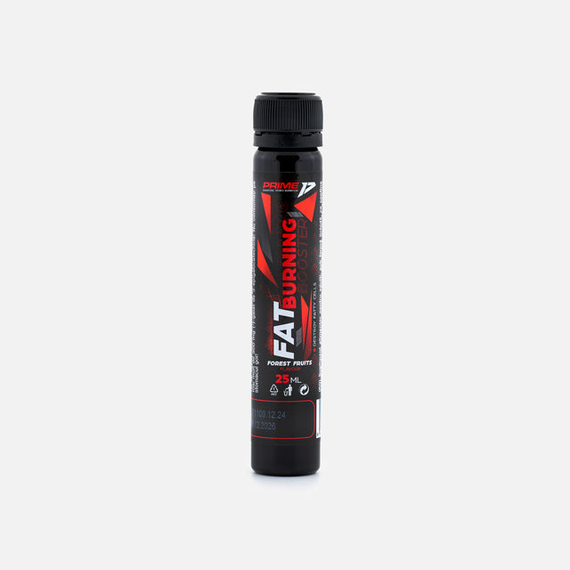
25 ml vial · single or box of 20 · Forest Fruits
Per vial: 4,000 mg L-carnitine, green tea and green coffee extracts, 117.5 mg caffeine and 40 µg chromium (100% NRV).
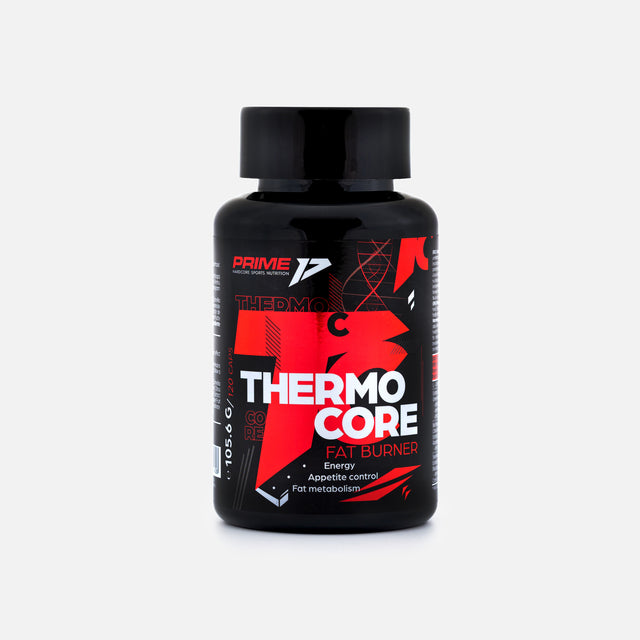
120 capsules · 40 servings
Per 3 capsules: 1,125 mg L-carnitine, 618 mg green tea extract, citrus bioflavonoids, 45 mg synephrine and 50 µg chromium (125% NRV). Contains 49 mg caffeine.
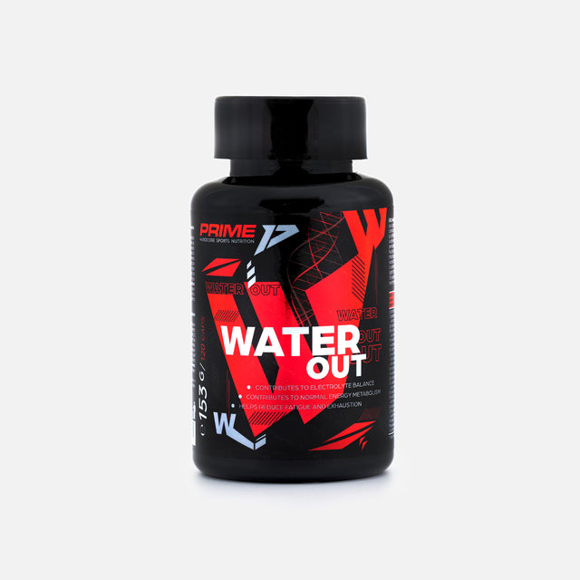
120 capsules · 40 servings
Per 3 capsules: 2,000 mg dry extracts from eight plants, with 375 mg potassium, 75 mg magnesium and 80 mg vitamin C (100% NRV). Contains green tea extract and 6 mg synephrine.
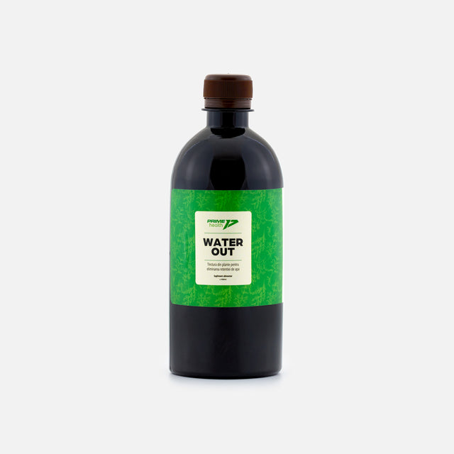
Prime Health · 500 ml · 100 servings
Tincture of eight plants (1:6 hydroethanolic extract), 5 ml per serving. Contains 30% vol. alcohol.
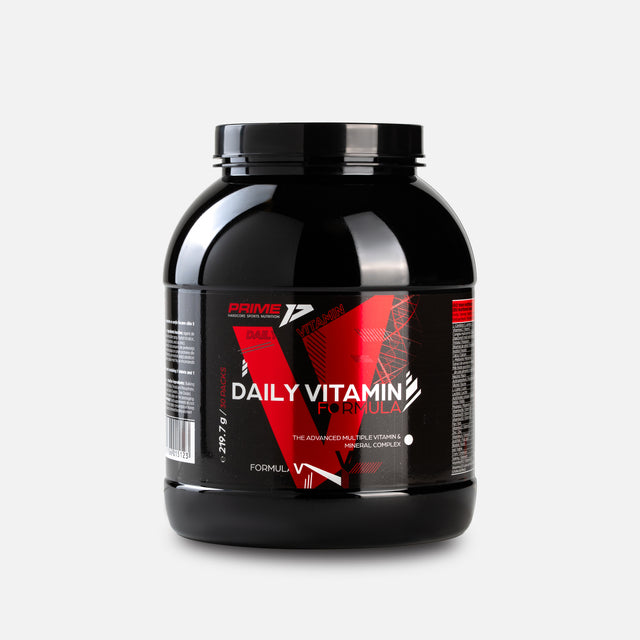
30 daily sachets
Each sachet holds five tablets and one capsule: 12 vitamins and 8 minerals with declared % NRV, plus DigeZyme® enzyme complex.
Prime Health · 80 vegetable capsules
100 µg (4,000 IU) vitamin D3 and 100 µg vitamin K2 (MK-7) per capsule. One capsule every two days.
Stacks with: Creatine Creapure®
80 capsules
1,000 mg vitamin C (ascorbic acid) per capsule, one capsule a day.
80 softgels
Concentrated fish oil: 180 mg EPA and 120 mg DHA per softgel, with 3 mg vitamin E.
Prime Health · 80 vegetable capsules
Two forms of magnesium per capsule: 300 mg magnesium bisglycinate and 100 mg magnesium malate.
Stacks with: Prime Whey
80 capsules · 40 servings
225 mg magnesium per capsule (60% NRV), from magnesium citrate and carbonate.
80 capsules
40 mg zinc from zinc citrate per capsule, one capsule a day.
80 capsules
Per 3 capsules: 324 mg potassium and 240 mg magnesium, both from citrates.
80 capsules
200 µg chromium per capsule, from chromium picolinate.
Full catalogue
Prime Health · 80 vegetable capsules
500 mg KSM-66® ashwagandha root extract per capsule, standardised to 5% withanolides.
Prime Health · 80 vegetable capsules
500 mg Bergamonte® bergamot fruit extract per capsule, standardised to 38% polyphenols.
80 capsules
440 mg milk thistle seed extract per capsule, of which 352 mg silymarin.
80 capsules
400 mg turmeric root extract (380 mg curcuminoids) and 5 mg piperine per capsule.
80 capsules · 40 servings
600 mg spirulina powder per capsule, two capsules a day.
Prime Health · 80 vegetable capsules
200 mg coenzyme Q10 (ubiquinone) per capsule.
80 capsules
500 mg N-acetylcysteine per capsule, one capsule a day.
60 capsules
100 mg nattokinase per capsule, with a declared activity of 2,000 FU.
Prime Health · liquid · 500 ml
6 g hydrolysed bovine collagen (Peptan®) per 15 ml dose, with plant extracts, aloe and vitamin C.
Prime Health · 500 ml
Tincture of seven plants, including hawthorn, hibiscus and valerian (1:6 hydroethanolic extract, 30% vol. alcohol).
Prime Health · 500 ml · 100 teaspoons
Tincture with Korean ginseng and five other plants (1:6 hydroethanolic extract, 30% vol. alcohol).
Full catalogue
Prime-branded shakers, accessories and apparel that put the brand on the gym floor. Some of the apparel belongs to the “Prime by MNX Sportswear” collection. Sizes and availability on request.
B2B partnership
We are looking for distribution partners who know their market and want a sports nutrition brand with a clear identity, a complete range and proven best sellers.
Tell us what you need to evaluate the brand and we will send you exactly the documents you require.
Get in touch
Tell us about your market and the product lines you are interested in. We will get back to you with product documentation and the next steps.
PRIME SPORT SUPPLEMENTS SRL · Company ID (CUI) 46260823 · Trade Register J32/1155/2022
Str. Ioan Virgil Ispas nr. 17A, 555300 Cisnădie, Sibiu County, Romania